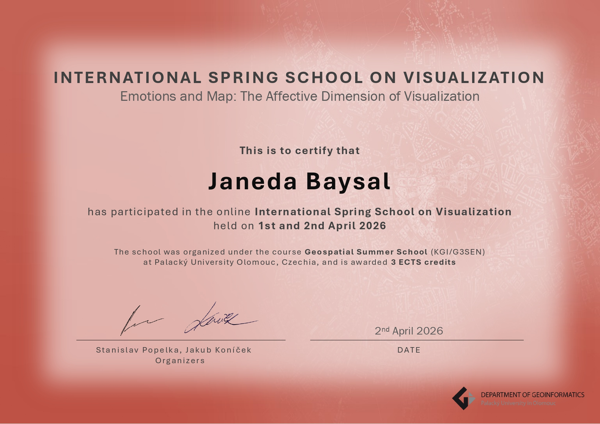

Theme: Emotions and Maps: The Affective Dimension of Visualisation
Participating in ISSonVIS 2026 (International Spring School on Visualization) was a valuable academic experience that broadened my perspective on cartography and visualization. Held online, the event brought together researchers and experts from different disciplines to explore the emotional, social, and technological dimensions of maps and visual communication.
Throughout the two-day programme, the presentations highlighted that maps are not merely technical tools for representing spatial information, but can also reflect people’s experiences, perceptions, and emotions. The event provided new insights into how visualization influences the way individuals interpret and understand information.
One of the key ideas emphasized during the event was that maps are not completely neutral. The speakers discussed how decisions related to data selection, visual design, and representation can shape people’s understanding of information. This perspective highlighted the ethical responsibilities of professionals working in cartography and geospatial communication.
The programme covered several contemporary topics, including emotional mapping, participatory mapping approaches, and the integration of artificial intelligence into cartography. Through these presentations, I gained a better understanding of both the opportunities that new technologies offer for visualization and the ethical challenges that accompany their use.
This event encouraged me to view maps not only as technical tools but also as communication instruments that reflect human experiences and perceptions. In particular, the discussions on human-centred mapping approaches and AI-assisted visualization were highly inspiring and thought-provoking.
Overall, ISSonVIS 2026 was a rewarding experience that introduced me to current developments in cartography and visualization, provided opportunities to engage with researchers from different disciplines, and inspired new ideas for my future academic work.